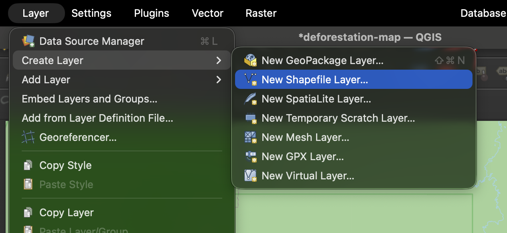
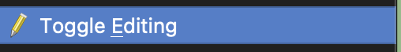
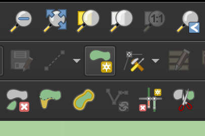
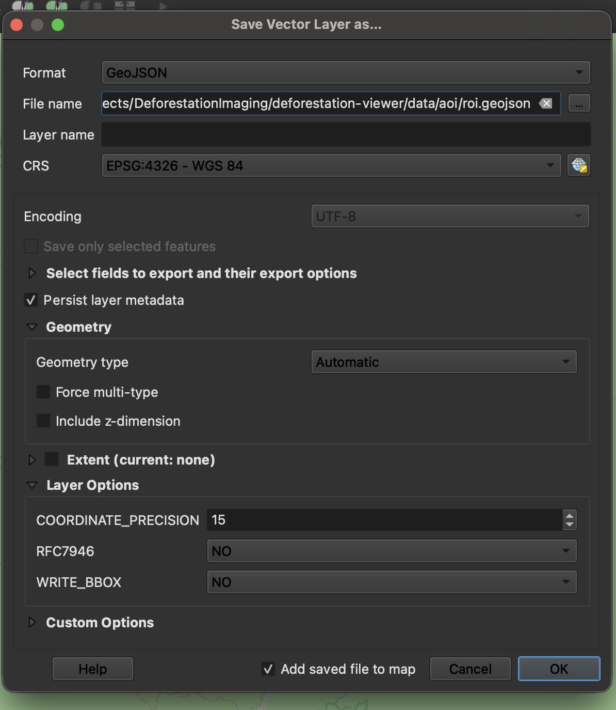
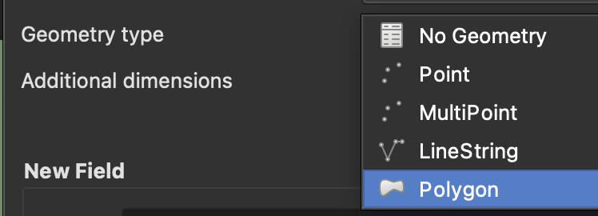

Creating a Custom Area of Interest (AOI)¶
This guide explains how to create your own Area of Interest (AOI) for the Deforestation Viewer, allowing you to analyze NDVI change over any chosen region.
1. Install QGIS¶
Download and install QGIS 3.x from the official website:
During installation: - Accept default options. - Ensure GDAL support is installed (included in recent QGIS versions).
Once installed, launch QGIS. You should see an empty map canvas.
2. Add a Basemap¶
QGIS opens with a blank grid by default. To add a satellite basemap, install the QuickMapServices plugin.
Install QuickMapServices¶
- In the menu bar, go to Plugins → Manage and Install Plugins…
- Search for QuickMapServices and click Install Plugin.
Add a Basemap¶
- Go to Web → QuickMapServices → Settings
- Click More Services → Get Contributed Pack → OK
- Then open Web → QuickMapServices → ESRI → ESRI Satellite
You should now see high-resolution satellite imagery.
This provides a visual reference for accurately drawing your AOI.
3. Draw Your AOI¶
- In the Layers panel, select New Shapefile Layer → Polygon
(or use Layer → Create Layer → New GeoPackage Layer if preferred)

- Set CRS to
EPSG:4326 (WGS 84) - Click OK to create the layer
-
Right-click the new layer → Toggle Editing

-
Use the Add Polygon Feature tool to draw your AOI (e.g., a forest, park, or region of interest)

-
When done, right-click → Save Edits, then toggle editing off
Tip:
Start with a relatively small AOI (a few thousand km² or less) when testing.
Larger AOIs may take significantly longer to process.
4. Export to GeoJSON¶
The viewer expects your AOI to be stored as a GeoJSON file at:
data/aoi/roi.geojson
To export:
- Right-click your AOI layer → Export → Save Features As…
- Set:
- Format: GeoJSON
- CRS:
EPSG:4326 – WGS 84 - File name:
data/aoi/roi.geojson - Click OK
 
Your project directory should now look like:
deforestation-viewer/
├── data/
│ └── aoi/
│ └── roi.geojson
5. Verify the AOI¶
Option A — QGIS¶
Re-open the saved GeoJSON file in QGIS to ensure it displays correctly and covers the intended region.
Option B — Python¶
Verify the AOI programmatically:
import geopandas as gpd
gdf = gpd.read_file("data/aoi/roi.geojson")
print(gdf.crs, gdf.total_bounds)
Expected output:
EPSG:4326 and valid longitude/latitude bounds
If CRS or coordinates appear incorrect, re-export the file with the correct settings.
6. Troubleshooting¶
| Issue | Likely Cause | Fix |
|---|---|---|
| AOI not showing or blank | Wrong CRS | Reproject to EPSG:4326 before export |
| AOI appears offset or distorted | Latitude/longitude order flipped | Ensure GeoJSON uses longitude first |
| Processing fails or hangs | AOI too large | Use a smaller AOI for testing |
| No imagery found | AOI outside Landsat/Sentinel coverage | Choose a region with global satellite data availability |
7. Next Steps¶
Once your AOI is saved and verified, you can:
- Run the NDVI processing pipeline (search_download.py) to generate annual composites
- Visualize NDVI and vegetation change in the Streamlit app (streamlit_app.py)
For detailed instructions, see: - NDVI Composite Builder - Streamlit Viewer Guide